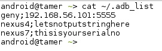
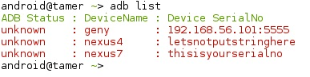

Managing multiple devices
Due to massive fragmentation and the will of vendors to keep selling devices with old versions. Android Professionals are forced to work with multiple devices / emulator's with various versions of android loaded on them.
With this problem in mind we went ahead and wrote a shim which should help us with this problem. To manage multiple devices in AndroidTamer you need to follow these steps
- Create a file in your home folder called as
.adb_list

- Once the list is configured then you can go ahead and check the status of each device.

Here any device line marked as GREEN means its connected and RED means its not connected.
- Now to connect to this device follow this command
android@tamer ~> adb geny shell
Here you can see instead of remembering the complex ip address or serial number we can simply use the new name provided for this functionality.